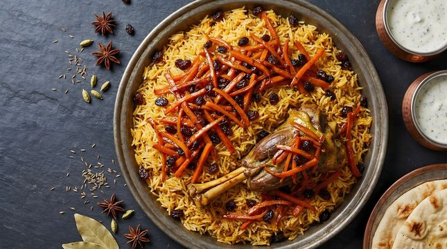
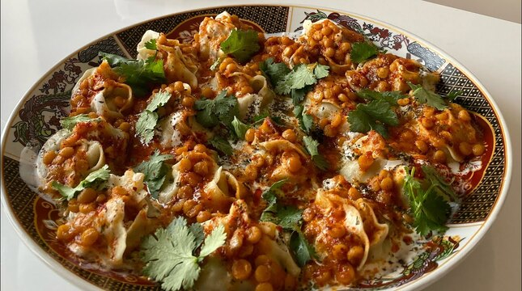

Location: District #4 Qowai Markaz, Kabul 1003, Afghanistan
Kabuli Pulao is a flavourful Afghan rice dish. The rice is cooked with meat and spices, and topped with carrots, raisins and nuts.

Location: G5MC+9Q5, Kabul, Afghanistan
Afghan dumplings served with meat, yoghurt sauce, beans or chickpeas and the liquid produced by them.
Mantu is one of the most popular and much-loved Afghan dishes.